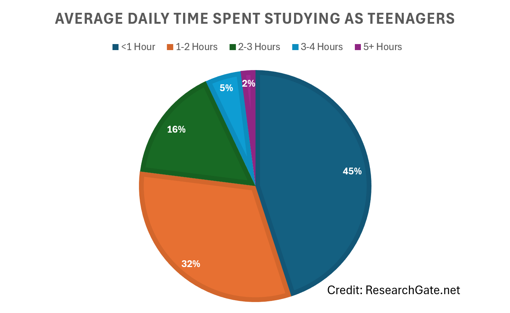
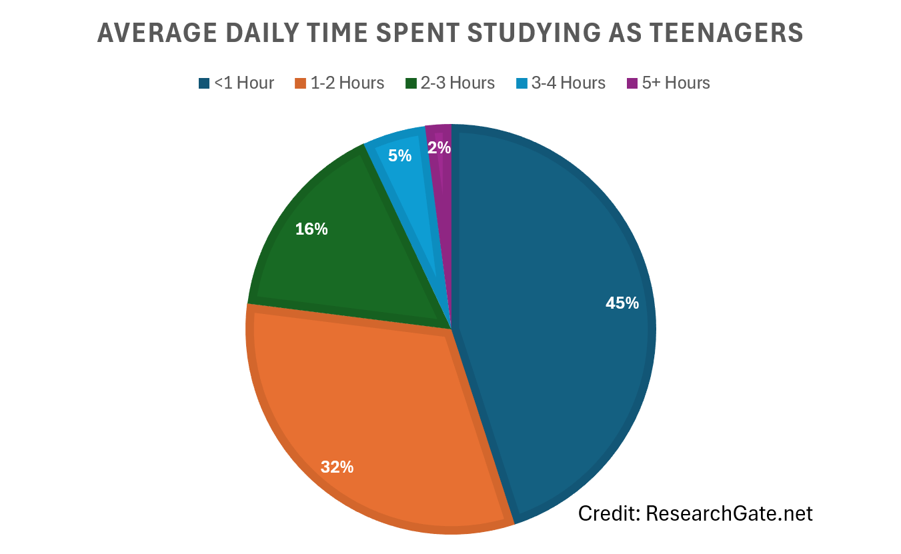

"It takes nothing to join the crowd. It takes everything to stand alone" - Hans. F Hansen
You may think that only the most charismatic individuals can lead a cause for change. While yes, we do see rebellions all around the world lead by strong courageous figures, there are countless more silent rebels fighting for what they believe is right in their communities without the world knowing. And these silent superheroes are what carry our modern society.
This digital essay will discuss the enduring need for silent rebellions, what they are, and how they are presented in texts such as “To Kill a Mockingbird” [TKAM] by Harper Lee & “12 Angry Men” [12AM] by Reginald Rose, along with how they relate to the battle teens face against peer pressure in our digital world.
When have you actually showed empathy in your life?

We’re taught to be empathetic throughout our lives, understanding others’ feelings & adapting our actions to avoid upsetting them. But does this count as actively defending someone in need?
In TKAM, we are introduced to Maycomb. Set in 1930’s Alabama, it is an in-depth depiction of the classic prejudice town. Throughout the book we see Atticus, a passionate lawyer who is defending an African-American man accused of sexually assaulting a white girl. Note that in this era, there would be a highly prejudice, all-white jury.
"Scout, simply by the nature of the work, every lawyer gets at least one case in his lifetime that affects him personally. This one’s mine, I guess. You might hear some ugly talk about it at school, but do one thing for me if you will: you just hold your head high and keep those fists down..." - Atticus Finch
Regardless of the odds, Atticus stuck with the case despite jeopardizing his career. This was a true act of empathy, defending an innocent man unjustly prosecuted based off the prejudice of an all-white jury.
In 12AM, we meet a 15-year-old boy accused of murdering his father in the slums. We see two witnesses who make up stories to get the boy accused, and a jury rushing the case to get home, which creates a highly dismissive & bias environment. So, who’s leading the silent rebellion here?
In the book, Juror #8 was the leader of change. He questioned all the ‘facts’ other Jurors brought up and laid pure logic in his arguments. However, despite his efforts, one man didn’t have the power to influence 11 others.
"Thank you. (to the 7th juror) This gentleman- (he indicates to the 8th juror) has been standing alone against us... it's not easy to stand alone against the ridicule of others. He gambled for support and I gave it to him... The boy on trial is probably guilty. But I want to hear more" - 9th Juror
By fighting the peer pressure, Juror #9 fuelled the silent rebellion that let the truth come out by providing an empathetical side to #8’s logical argument. This is why we need an empathetic side to the enduring rebel voice, now matter how quiet it is.
There’s another side to silent rebellions. While empathy is utilised to trigger strong emotion, a logical argument must be delivered to eradicate the wrongful ways of those with power. That is where rationality comes in.
As a lawyer, Atticus must maintain strong rationality throughout the book. He knows that the jury is not in his favour, but he still successfully presents an incredible argument that, without a prejudice jury, would earn him a victory.
"Jem, see if you can stand in Bob Ewell’s shoes a minute. I destroyed his last shred of credibility at that trial, if he had any to begin with. The man had to have some kind of comeback, his kind always does. So if spitting in my face and threatening me saved Mayella Ewell one extra beating, that’s something I’ll gladly take." - Atticus Finch
Back in 12AM, we turn to the 8th Juror. He knew that all the other men were tired; They all wanted to get out by finishing the case quickly despite letting the boy be executed. But even from the get-go, Juror #8 introduced reasonable doubt.
"...It's not easy for me to raise my hand and send a boy off to die without talking about it first" - 8th Juror
While it was a miniscule point to begin with, he used it to lead the silent rebellion that saved the boy’s life despite facing the ridicule of the other jurors.
Both texts provide examples of how distinguished men have fought against societal norms, but what about teenagers like us?
During adolescence, teenagers face a dilemma: we can use our newfound freedom to party, game until midnight & do whatever we want. However, this crucial developmental stage demands focus on our studies, exercise & essential life skills, which subjects us to intense ridicule from the groundwork laid by social media. But does this stop us? No, and self-improving teenagers are exactly the enduring rebellion we need to improve our society.
 

The enduring rebel voice is the powerhouse of society. By challenging societal norms like modern-day adolescents, we can all effectively fight to improve our day-to-day lives. And all we need is to rebel “silently” by challenging the norms within our own communities. By combining rationality & empathy, we can disintegrate wrongful POV’s and improve our world without anyone hearing.

Coded, written & designed entirely by Lachlan Harris (~270+ lines of code excluding text)
Word document for marking purposes